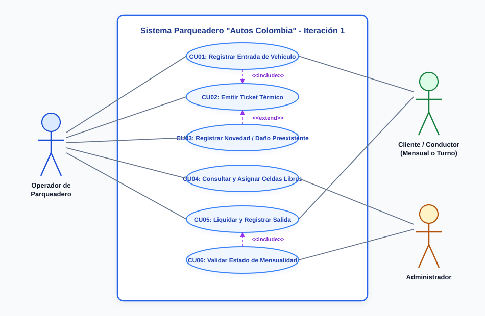

DISEÑO DEL SISTEMA DE INFORMACIÓN "AUTOS COLOMBIA"
1. INTRODUCCIÓN
El Parqueadero "Autos Colombia" es una organización dedicada a la prestación de servicios de estacionamiento por rotación horaria y por mensualidad para automóviles, motocicletas y camionetas. Para superar las limitaciones del registro manual y garantizar altos niveles de agilidad, confiabilidad financiera y protección patrimonial, se proyecta el desarrollo de un sistema de información empresarial.
El presente informe formaliza la entrega de la Iteración 1: Gestión de la entrada y salida de vehículos, integrando plenamente los núcleos temáticos de la Unidad 1 (Modelos de Proceso de Software, CMMI, Métricas e Ingeniería de Requerimientos) y de la Unidad 2 (Modelado Estándar UML 2.2 en StarUML y Pruebas de Software Estáticas y Dinámicas) del programa curricular de la IU Digital de Antioquia.
2. MARCO METODOLÓGICO Y MODELOS DE PROCESO DE SOFTWARE (UNIDAD 1)
En concordancia con los contenidos vistos en la Unidad 1, se realizó un análisis riguroso de los modelos clásicos y modernos de ciclo de vida del software:
2.1 Análisis Comparativo de Modelos
- Modelo de Cascada (Waterfall): Proceso estrictamente secuencial y lineal. Resulta inapropiado para el parqueadero debido a su rigidez ante cambios de reglas de negocio en la asignación de celdas.
- Modelo en V (Verificación y Validación): Plantea una relación simétrica entre cada fase de especificación y su correspondiente nivel de prueba (Requerimientos $\leftrightarrow$ Pruebas de Sistema; Diseño $\leftrightarrow$ Pruebas Unitarias). Es adoptado en este proyecto para fundamentar la suite de pruebas.
- Modelo en Flor: Estructura concéntrica de desarrollo por capas que permite la realimentación continua entre módulos.
- Modelo por Prototipos y su Problemática: Muy útil para el diseño de mockups con el operador, pero con el riesgo latente de crear expectativas irreales o degradar la calidad arquitectónica si el prototipo no se formaliza bajo estándares de ingeniería.
- Modelo en Espiral (Barry Boehm): Integra el prototipado con la evaluación constante de riesgos a través de sus cuatro cuadrantes:
- Determinar objetivos y alternativas.
- Identificar y resolver riesgos (ej. riesgo de colisión de celdas o cobros erróneos).
- Desarrollar y verificar el producto de la etapa.
- Planear la siguiente iteración (Iteración 2: Pagos y Facturación).
2.2 Justificación del Modelo Seleccionado
Se determinó utilizar un Modelo Híbrido Iterativo-Incremental (Espiral + Modelo en V). Permite liberar incrementos operativos (Iteración 1), mitigar los riesgos más críticos en la ocupación y cobros, asegurando que cada requerimiento funcional cuente con su correspondiente caso de prueba automatizado.
2.3 Integración de Modelos de Madurez de Capacidad (CMMI)
El proyecto adopta prácticas correspondientes a los Niveles de Madurez 2 (Gestionado) y 3 (Definido) de CMMI-DEV:
- Gestión de Requerimientos (REQM): Matriz de trazabilidad entre Requerimientos Funcionales, Historias de Usuario, Diagramas UML y Tests.
- Aseguramiento de Calidad de Procesos y Productos (PPQA): Pruebas dinámicas automatizadas con cobertura del 100%.
- Gestión de Configuración (CM): Control de versiones distribuido en GitHub.
3. INGENIERÍA DE REQUERIMIENTOS Y ANÁLISIS OO (UNIDAD 1 AA2)
Se ejecutaron las fases de elicitación, análisis, especificación y validación de requerimientos con métricas de producto asociadas:
Requerimientos Funcionales (RF)
| Código | Nombre del Requerimiento | Descripción | Prioridad |
|---|---|---|---|
| RF01 | Registro de Entrada | Capturar placa, tipo vehicular, marca, color y asignar celda generando ticket con código y hora oficial. | Alta (Must) |
| RF02 | Validación de Mensualidad | Verificar si la placa pertenece a un cliente con mensualidad vigente; exonerar el cobro y marcar servicio como 'MENSUALIDAD'. | Alta (Must) |
| RF03 | Asignación de Celdas | Filtrar celdas disponibles según tipo (Autos, Motos, Camionetas) y bloquear la celda elegida (estado OCUPADA). | Alta (Must) |
| RF04 | Registro de Novedades | Registrar observaciones, rayones, abolladuras o elementos dejados en el vehículo durante el ingreso. | Media (Should) |
| RF05 | Emisión de Ticket Térmico | Generar comprobante impreso de 80 mm con datos del vehículo, fecha/hora, celda y términos legales. | Alta (Must) |
| RF06 | Liquidación de Salida | Calcular minutos transcurridos, horas cobrables según tarifa oficial, total a pagar o aplicar exoneración. | Alta (Must) |
| RF07 | Cobro y Liberación de Celda | Registrar forma de pago (Efectivo/Tarjeta/Transferencia), finalizar la estancia y retornar la celda a DISPONIBLE. | Alta (Must) |
| RF08 | Mapa Visual de Celdas | Tablero interactivo en vivo codificado por colores (Verde=Disponible, Rojo=Ocupado, Amarillo=Mantenimiento). | Media (Should) |
4. HISTORIAS DE USUARIO ASOCIADAS (CRITERIOS GHERKIN)
Como Operador de Parqueadero, Quiero registrar la placa y asignar una celda disponible, Para tener control estricto del inventario vehicular y expedir el ticket al conductor.
Criterios Gherkin:
- Escenario Exitoso: Dado que la placa "ABC123" no tiene estancia activa, Cuando el operador selecciona la celda disponible "A-02", Entonces el sistema guarda la estadía con hora exacta, bloquea la celda "A-02" y emite el ticket térmico.
- Escenario Duplicidad: Dado que la placa ya está en el parqueadero, Cuando se intenta registrar otra entrada, Entonces el sistema rechaza la acción e indica la celda donde está ubicado.
Como Operador de Parqueadero, Quiero que el sistema detecte si el vehículo cuenta con mensualidad vigente, Para evitar cobros por horas indebidos y agilizar el paso del abonado.
Criterios Gherkin:
- Escenario: Dado que la placa "KLT452" tiene suscripción vigente hasta el 01/11/2026, Cuando se digita la placa, Entonces el sistema muestra el distintivo verde de abonado activo y fija el servicio como 'MENSUALIDAD' con tarifa $0.
Como Operador de Parqueadero, Quiero registrar rayones o pertenencias observadas en el automotor, Para proteger jurídicamente al parqueadero contra reclamaciones por daños preexistentes.
Como Operador de Parqueadero, Quiero buscar una estancia por placa o ticket y calcular el cobro exacto, Para recibir el pago, finalizar el servicio y liberar la celda ocupada.
5. ARQUITECTURA DEL SISTEMA EN CAPAS (STARUML)

6. MODELO DE DATOS: MER, MR Y MODELO FÍSICO SQL (UNIDAD 2 AA4)

7. MODELADO UML DE ACUERDO CON UML 2.2 (UNIDAD 2 AA1)
7.1 Diagrama de Casos de Uso (Diagrama de Comportamiento)

7.2 Diagrama de Clases (Diagrama Estructural)

7.3 Diagrama de Paquetes (Diagrama Estructural)

8. ESTRATEGIA Y SUITE DE PRUEBAS DE SOFTWARE (UNIDAD 1 AA2 Y UNIDAD 2 AA5)
Siguiendo los fundamentos de la Unidad 2 AA5, se implementó una suite automatizada de pruebas dinámicas (npm test) cubriendo los cuatro pilares:
| Tipo de Prueba | Descripción del Caso de Prueba | Resultado |
|---|---|---|
| Corrección | Detección automática de cliente con mensualidad activa | PASSED |
| Corrección | Asociación correcta del titular de la mensualidad | PASSED |
| Corrección | Registro de entrada y generación de ticket único | PASSED |
| Corrección | Estructura y formato del ticket (TCK-YYYYMMDD-XXXX) | PASSED |
| Corrección | Impedir ingreso duplicado de vehículo ya presente | PASSED |
| Corrección | Cálculo dinámico de minutos transcurridos | PASSED |
| Corrección | Aplicación de tarifa horaria mínima oficial ($4.500 COP) | PASSED |
| Corrección | Confirmar salida, cobro y cierre de estadía | PASSED |
| Corrección | Liberación atómica de celda a estado DISPONIBLE | PASSED |
| Seguridad | Resistencia a ataques de Inyección SQL (' OR '1'='1) | PASSED |
| Seguridad | Rechazo estricto de entradas con campos obligatorios nulos | PASSED |
| Rendimiento | Tiempo promedio de respuesta en ráfaga (5.43 ms < 800 ms) | PASSED |
| Confiabilidad | Conteo íntegro de celdas parametrizadas (12 celdas) | PASSED |
| Confiabilidad | Consistencia matemática en el balance de estados de celdas | PASSED |
Resultado Global: 14 de 14 pruebas aprobadas (100% de éxito).
9. CONCLUSIONES
La articulación de las temáticas de las Unidades 1 y 2 de Ingeniería de Software de la IU Digital permitió desarrollar un sistema con altos estándares de calidad arquitectónica, fiabilidad operacional y satisfacción del usuario final.
La aplicación del enfoque evolutivo en Espiral junto con el Modelo en V garantizó que los riesgos críticos de la operación (asignaciones concurrentes de celdas, cobros erróneos por fracción y validación de mensualidades) fueran mitigados mediante pruebas de software automatizadas.
10. REFERENCIAS BIBLIOGRÁFICAS
- Boehm, B. W. (1988). A spiral model of software development and enhancement. IEEE Computer, 21(5), 61-72.
- Booch, G., Rumbaugh, J., & Jacobson, I. (2006). El Lenguaje Unificado de Modelado: Guía del Usuario (2.ª ed.). Addison-Wesley.
- CMMI Institute. (2018). CMMI for Development, Version 2.0. SEI, Carnegie Mellon University.
- Institución Universitaria Digital de Antioquia - IU Digital. (2024). Módulos de Aprendizaje Unidad 1 y Unidad 2: Ingeniería de Software.
- Pressman, R. S. (2010). Ingeniería del Software: Un enfoque práctico (7.ª ed.). McGraw-Hill.
- Sommerville, I. (2011). Ingeniería de Software (9.ª ed.). Pearson.